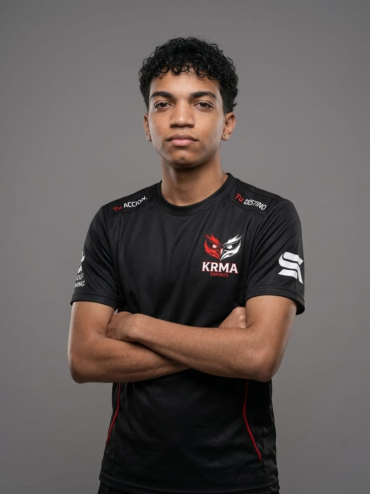

🎓 Formación Técnica
Enfocado en el análisis, diseño y desarrollo de sistemas. Aprendiendo la arquitectura de código, bases de datos y desarrollo web para crear soluciones tecnológicas eficientes.
Caracas, Venezuela | Estudiante de Sistemas, Emprendedor & Jugador Competitivo
¡Hola a todos! Les presento mi perfil personal. Nací y resido en Caracas, Venezuela. Actualmente divido mi tiempo entre el crecimiento profesional, el trabajo independiente y el ámbito competitivo de los Esports.
Me mantengo activo estudiando el T.S.U. en Análisis y Diseño de Sistemas mientras trabajo de forma simultánea. Como proyecto personal de emprendimiento, me dedico a la venta directa de gorras por cuenta propia.
Enfocado en el análisis, diseño y desarrollo de sistemas. Aprendiendo la arquitectura de código, bases de datos y desarrollo web para crear soluciones tecnológicas eficientes.
Gestión y comercialización independiente de gorras. En constante búsqueda de expandir mi marca personal mediante disciplina financiera y atención al cliente.
Actualmente formo parte de una organización respaldada por el dueño de una plataforma gaming. Dentro del campo de batalla me desempeño en el rol estratégico de Soporte, coordinando y cubriendo a mis 4 compañeros que ejercen la función de Rushers.

Soporte Principal (Cobertura & Estrategia)
1 Soporte + 4 Rushers
Demostrando el talento de Venezuela 🇻🇪
Nuestra gran meta es clasificar y competir en la VGS y dar el gran salto a la FFWS (Free Fire World Series). Más allá del resultado final, nuestra convicción es llegar a la meta, dejar en alto el nombre de Venezuela y demostrar la capacidad competitiva de nuestro equipo. Sabemos que el camino requiere disciplina y no será fácil, pero confiamos plenamente en que nuestro esfuerzo diario dará frutos.